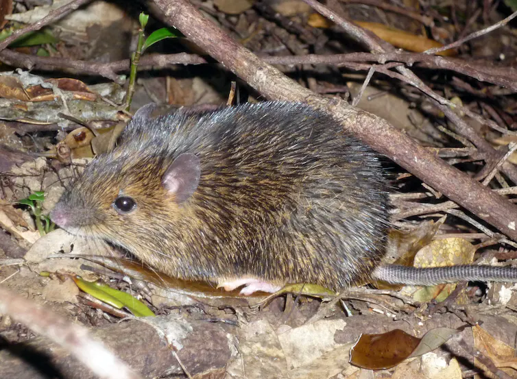

ဒါပေမယ့် လူသားတွေရဲ့ Y ခရိုမိုဆုမ်း ဟာ တဖြည်းဖြည်း ပျက်စီးလို့ လာနေပါတယ်။ ဒီနှုန်းအတိုင် ဆက်လက် ပျက်စီး နေမယ်ဆိုရင် လာမယ့် နှစ်သန်း အနည်းငယ် အတွင်းမှာ လူသားတွေရဲ့ Y ခရိုမိုဆုမ်း လုံးဝ ပျောက်ဆုံးသွား လိမ့်မယ်လို့ ပညာရှင် တွေက ယူဆ ကြပါတယ်။
ဒီလို Y ခရိုမိုဆုမ်း ပျောက်ဆုံး ကွယ်ပျောက် သွားခဲ့ရင် အမျိုးသား တွေရဲ့ မျိုးပွားနိုင်စွမ်း ဆုံးရှုံး သွားမှာလား။ ဒါမှမဟုတ် အမျိုးသားတွေ မွေးဖွားလာခြင်း မရှိတော့ပဲ အမျိုးသမီးတွေ ချည်းပဲ မွေးလာကြမှာလား။ ဒီအချိန်မှာ လူသားမျိုးနွယ်စု တစ်ခုလုံး ပျက်စီး ပျောက်ကွယ် သွားမှာလား။ ဒါမှ မဟုတ် Y ခရိုမိုဆုမ်းရဲ့ နေရာကို အခြား ခရိုမိုဆုမ်း တစ်ခုခုက အစားဝင် နေရာ ယူလိုက်မှာလား။
ဒါပေမယ့် သတင်းကောင်း တစ်ခုတော့ ရှိပါတယ်။ အဲ့ဒါကတော့ ကြွက်မျိုးနွယ်ဝင် သတ္တဝါ မျိုးစိတ် နှစ်ခုမှာ ဒီလို Y ခရိုမိုဆုမ်း ဆုံးရှုံး သွားခဲ့ပြီး ဖြစ်ပေမယ့် မျိုးတုန်း ပျောက်ကွယ်သွားခြင်း မရှိတာပဲ ဖြစ်ပါတယ်။
Proceedings of the National Academy of Science သုတေသန ဂျာနယ်မှာ မကြာမီက တင်ပြခဲ့တဲ့ သုတေသန စာတမ်း တစ်စောင်မှာ ဒီ ကြွက်မျိုးစိတ် တစ်ခုကို အသေးစိတ် လေ့လာပြီး တွေ့ရှိချက်တွေကို တင်ပြ ထားပါတယ်။
ဒီစာတမ်းရဲ့ အဆိုအရ ဒီ ကြွက်တွေမှာ Y ခရိုမိုဆုမ်း မရှိ တော့ပေမယ့် ကျား ဖြစ်မှုကို အဆုံးအဖြတ် ပေးတဲ့ မျိုးရိုးဗီဇ အသစ် တစ်ခုကို ဖန်တီး နိုင်ခဲ့ ကြတယ် ဆိုတာပဲ ဖြစ်ပါတယ်။
Y ခရိုမိုဆုမ်းက ကျားမကို ဘယ်လို ဆုံးဖြတ်ပေးသလဲ
လူ အပါအဝင် နို့တိုက် သတ္တဝါ တွေမှာ ကျားမ ဖြစ်မှုကို ဆုံးဖြတ် ပေးတဲ့ X နဲ့ Y ခရိုမိုဆုမ်း တွေ ရှိကြပါတယ်။ အမ တွေမှာ ဆိုရင် X ခရိုမိုဆုမ်း ပဲ ပါဝင်ပြီး Y ခရိုမိုဆုမ်း မပါဝင် ပါဘူး။ အဖိုတွေ မှာတော့ Y ခရိုမိုဆုမ်း ပါရှိပါတယ်။ (အမတွေမှာ X ခရိုမိုဆုမ်း ချည်းပဲနှစ်ခု ပါဝင်ပြီး အဖိုတွေ မှာတော့ X တစ်ခု နဲ့ Y တစ်ခု ပါဝင် ကြပါတယ်။)လူသားတွေရဲ့ X ခရိုမို ဆုမ်းမှာ မျိုးရိုးဗီဇ gene ပေါင်း ၉၀၀ လောက် ပါဝင်ပါတယ်။ ဒီ မျိုးရိုးဗီဇ တွေဟာ ကျားမ ဖြစ်မှုနဲ့ နှီးနွယ် ပါတ်သက်တဲ့ လုပ်ငန်းဆောင်တာ အများအပြားကို လုပ်ဆောင် ပေးကြပါတယ်။
ဒါပေမယ့် Y ခရိုမိုဆုမ်း ကတော့ မျိုးရိုးဗီဇ ၅၅ ခုပဲ ပါဝင်ပါတယ်။ ဒီ မျိုးရိုးဗီဇ ၅၅ ခုအပြင် ဘာ မျိုးရိုးဗီဇ ကိုမှ ကိုယ်စားမပြုတဲ့ ဘာ အဓိပ္ပါယ်မှ ရှိဟန် မတူတဲ့ ဒီအင်အေ (DNA) အများအပြားလဲ ပါဝင် နေပါတယ်။
ဒီလို အားနည်းနေပေမယ့် Y ခရိုမိုဆုမ်းဟာ အလွန် အရေးပါတဲ့ ခရိုမိုဆုမ်း တစ်ခု ဖြစ်ပါတယ်။ ဘာ့ကြောင့်လဲ ဆိုတော့ ဒီ ခရိုမိုဆုမ်း ပေါ်မှာ သန္ဓေ သားလောင်းကနေ အမျိုးသား တစ်ဦး ဖြစ်လာဖို့ လိုအပ်တဲ့ ကိုယ်ခန္ဓာ ဖွံ့ဖြိုးမှုတွေ ဖြစ်ပေါ်အောင် အမိန့်ပေးတဲ့ မျိုးရိုးဗီဇ ပါဝင်နေလို့ပဲ ဖြစ်ပါတယ်။
သန္ဓေသား လောင်း အသက် ၁၂ ပတ် (၃ လ နီးပါး) ရှိတဲ့ အချိန်မှာ ဒီ အမိန့်ပေး မျိုးရိုးဗီဇ ဟာ အမျိုးသား ဝေးစေ့ ကို ဖြစ်ပေါ်စေတဲ့ မျိုးရိုးဗီဇ တွေကို နိုးထလာဖို့ ညွှန်ကြားချက်တွေ စတင် ထုတ်ပေးပါတယ်။ ဒီ ညွှန်ကြားချက်တွေ ရရှိတဲ့ အခါ အခြား သက်ဆိုင်ရာ မျိုးရိုးဗီဇ gene တွေ နိုးထလာပြီး ဝေးစေ့ တစ်စုံ ဖွံ့ဖြိုးလာအောင် ဆက်လုပ် လုပ်ဆောင် ပေးပါတယ်။
ဒီလို ဖွံ့ဖြိုးလာတဲ့ ဝေးစေ့ကနေ လိုအပ်တဲ့ အမျိုးသား ဟော်မုန်းတွေကို ဆက်လက် ထုတ်ပေးပါတယ်။ ဒီ အမျိုးသား ကျားဟော်မုန်းတွေ ရရှိတဲ့ အတွက်ကြောင့် သန္ဓေသားဟာ ယောက်ျားလေး တစ်ယောက်အဖြစ် အောင်မြင်စွာ ဖွံ့ဖြိုးလာတာ ဖြစ်ပါတယ်။
ဒီ အမိန့်ပေး မျိုးရိုးဗီဇ ကို ၁၉၉၀ မှာ ရှာဖွေ တွေ့ရှိခဲ့တာ ဖြစ်ပါတယ်။ သူ့ကို SRY (sex region on the Y) လို့ အတိုကောက် အမည် ပေးထား ပါတယ်။
ဒီ SRY မျိုးရိုးဗီဇ gene ဟာ အခြား မျိုးရိုးဗီဇ တွေကို အမိန့်ပေးဖို့ အတွက် SOX9 မျိုးရိုးဗီဇ ကနေ တဆင့်ခံပြီး လုပ်ဆောင်ပါတယ်။
ဒီ SOX9 မျိုးရိုးဗီဇ ဟာ ကျောရိုးရှိ သတ္တဝါ (vertebrates) တွေ အားလုံးမှာ ပါဝင်တဲ့ ဘုံ မျိုးရိုးဗီဇ ဖြစ်ပါတယ်။ ဒီ SOX9 ဟာ ကျား အဖြစ် ဖန်တီးပေး ရာမှာ အဓိက ကျတဲ့ ကြားခံ မျိုးရိုးဗီဇ တစ်ခု ဖြစ်ပါတယ်။ ဒါပေမယ့် ထူးခြားတာက ဒီ မျိုးရိုးဗီဇဟာ ဝိုင် ခရိုမိုဆုမ်း ပေါ်မှာ ရှိမနေ တာပဲ ဖြစ်ပါတယ်။
ပျောက်ဆုံးနေသော ဝိုင်ခရိုမိုဆုမ်း
နို့တိုက်သတ္တဝါ (mammals) အများစုမှာ ကျွန်တော်တို့ လူတွေနဲ့ အလားတူတဲ့ X နဲ့ Y ခရိုမိုဆုမ်းတွေ ပါဝင် ကြပါတယ်။ X ခရိုမိုဆုမ်း ပေါ်မှာ မျိုးရိုးဗီဇ အများအပြား ပါဝင် ကြပြီး Y ခရိုမို ဆုမ်း ပေါ်မှာတော့ SRY နဲ့ အခြား မျိုးရိုးဗီဇ အနည်းအကျဉ်းသာ ပါဝင် နေပါတယ်။ဒီ အချက်က ကျား နဲ့ မ အကြားမှာ X မျိုးရိုးဗီဇတွေ ပါဝင်နှုန်း အကြီးအကျယ် ကွာဟချက် တစ်ခုကို ဖြစ်ပေါ် စေပါတယ်။ (မ တွေမှာ X နှစ်ခု ပါပြီး ကျားမှာ X တစ်ခုထဲ ပါတာမို့ X က သယ်ဆောင်တဲ့ မျိုးရိုးဗီဇ အရေအတွက်ဟာ မ မှာ ကျားထက် နှစ်ဆ ဖြစ်နေပါတယ်။)
ဒီလို ခွကျတဲ့ စနစ်က ဘယ်လို ဖြစ်ပေါ်လာ ရတာလဲ။
ဒီနေရာမှာ အံ့ဩစရာ ရှာဖွေ တွေ့ရှိချက် တရပ်ကို တင်ပြ လိုပါတယ်။ ဒါကတော့ ဩစတြေးလျ တိုက်က platypus ခေါ်တဲ့ ဘဲတူ ဖျံတူ တွေမှာ အခြားသော နို့တိုက် သတ္တဝါ တွေနဲ့ မတူတဲ့ လိင် ခရိုမိုဆုမ်းတွေ ရှိနေတယ် ဆိုတာကို တွေ့ရှိ ခဲ့တာပဲ ဖြစ်ပါတယ်။
ဒီ ဘဲတူ ဖျံတူ တွေမှာ XY ခရိုမိုဆုမ်း သာမန် ခရိုမိုဆုမ်း တွေသာ ဖြစ်ကြပါတယ်တဲ့။ ဘဲတူဖျံတူရဲ့ XY ခရိုမိုဆုမ်း တွေဟာ အချင်းချင်း တူညီတဲ့ အရွယ်အစား ရှိတဲ့ သာမန် ခရိုမိုဆုမ်း တွေပဲ ဖြစ်ကြပါတယ်။
ဒီအချက်က ဘာကို ပြလဲ ဆိုတော့ နို့တိုက်သတ္တဝါ တွေမှာ တချိန်က XY ခရိုမိုဆုမ်းဟာ သာမန် ခရိုမိုဆုမ်း တစ်စုံသာ ဖြစ်ပြီး ကျားမ ခရိုမိုဆုမ်း အဖြစ် ပြောင်းလဲလာ ခဲ့တာ သိပ် မကြာလှ သေးဘူး ဆိုတာပဲ ဖြစ်ပါတယ်။
ဆိုလိုတာက Y ခရိုမိုဆုမ်းဟာ မူလက X ခရိုမိုဆုမ်း လိုပဲ မျိုးရိုးဗီဇ ၉၀၀ ကျော် ရှိခဲ့ပါတယ်။ ဒါပေမယ့် သမိုင်းတလျှောက် ဆင့်ကဲ ပြောင်းလဲမှု ဖြစ်စဉ်မှာ မျိုးရိုးဗီဇ ၈၅၀ လောက် ပျောက်ဆုံး သွားခဲ့ပါတယ်။
လူသား မျိုးနွယ် နဲ့ ဘဲတူဖျံတူ မျိုးနွယ် နှစ်ခုရဲ့ ရှေးဘိုးဘေး နို့တိုက်သတ္တဝါတွေ ကွဲပြား သွားခဲ့တာ လွန်ခဲ့တဲ့ နှစ်သန်း ၁၆၆ သန်းခန့်က ဖြစ်ပါတယ်။ ဒီ လို ကွဲသွားတဲ့ အချိန် နောက်ပိင်းမှာ ဘဲတူဖျံတူတွေက မူရင်း မျိုးရိုးဗီဇ တွေကို ထိန်းသိမ်း ထားနိုင် ခဲ့ပေမယ့် လူနဲ့ အခြား နို့တိုက် သတ္တဝါ တွေမှာတော့ အများစုကို ထိမ်းသိမ်း ထားနိုင်ကြခြင်း မရှိပဲ ပျောက်ဆုံး ပျက်စီး ကုန်ကြပါတယ်။
ကြမ်းဖျင်း တွက်ကြည့်ရင် နှစ် ၁ သန်း ကြာတိုင်း မျိုးရိုးဗီဇ ၅ ခု နှုန်းလောက် ပျောက်ဆုံး သွားခဲ့တာ ဖြစ်ပါတယ်။ (နှစ်သန်း ၁၆၆ အတွင်း ၈၅၀ ခန့် ပျောက်ဆုံး ခဲ့တာ ဆိုတော့ တွက်ကြည့်လို့ ရပါတယ်။)
ဒီနှုန်း အတိုင်းဆို လူမှာ ကျန်တဲ့ Y မျိုးရိုးဗီဇ ၅၅ ခုဟာ နောက် နှစ် ၁၁ သန်း လောက်အတွင်း ပျောက်ဆုံး သွားကြမှာ ဖြစ်ပါတယ်။
ဝိုင်ခရိုမိုဆုမ်း မရှိတော့တဲ့ ကြွက်
ဒီနေရာမှာ ရှေ့က ပြောခဲ့တဲ့ သတင်းကောင်းလေး ပြန်ပြော ချင်ပါတယ်။ ဒါကတော့ အနည်းဆုံး ကြွက်မျိုးနွယ် နှစ်ခုမှာ ဝိုင် ခရိုမိုဆုမ်း မရှိပေမယ့် မျိုးတုန်း ပျောက်ကွယ် မသွားဘူး ဆိုတာပဲ ဖြစ်ပါတယ်။အရှေ့ ဥရောပ တိုက်က ကြွက်ပု (Northern mole vole, Ellobius talpinus) နဲ့ ဂျပန်က ဆူးကြွက် (Japanese spiny rats, Tokudaia muenninki) တွေမှာ ဝိုင် ခရိုမိုဆုမ်း ပါဝင်ခြင်း မရှိပါဘူး။ ဝိုင် ခရိုမို ဆုမ်း ပေါ်မှာ ပါလေ့ရှိတဲ့ ကျားမ အမိန့်ပေး မျိုးဗီဇ SRY gene ဟာလဲ ပျောက်ဆုံး နေပါတယ်။
ဒါပေမယ့် X ခရိုမို ဆုမ်း ကတော့ မူရင်းအတိုင်း မပျက်မစီး ကြွင်းကျန် နေပါတယ်။ အချို့ ကြွက်တွေမှာ X ခရိုမိုဆုမ်း တစ်ခုပဲ ပါဝင်ပြီး အချို့ကတော့ နှစ်ခု (တစ်စုံ) ပါဝင် ကြပါတယ်။ ဒီ X ခရိုမိုဆုမ်း ပါဝင်တဲ့ အရေအတွက် ကလဲ ဒီ ကြွက်တွေ ကျားမ ဖြစ်မှုနဲ့ သက်ဆိုင်ခြင်း မရှိပါဘူး။

ဂျပန်နိုင်ငံ ဟိုကိုင်းဒိုး တက္ကသိုလ် (Hokkaido University) က ဇီဝဗေဒ ပညာရှင် ကူရိုအီဝါ (Kuroiwa) ဦးဆောင်တဲ့ သုတေသီ အဖွဲ့ဟာ ဂျပန် ဆူးကြွက်ကို လေ့လာ ခဲ့ကြပါတယ်။ ဒီ အဖွဲ့ဟာ ဂျပန် ကျွန်းပေါ်က မျိုးတုန်းလု နီးပါး ဖြစ်နေပြီ ဖြစ်တဲ့ ဆူးကြွက် မျိုးစိတ် ၃ မျိုးကို အဓိက ဦးစားပေး လေ့လာ ခဲ့ကြပါတယ်။
ကူရိုအီဝါ နဲ့ အဖွဲ့ဟာ ဘာကို တွေ့ရှိခဲ့လဲဆိုတော့ ဒီကြွက်တွေရဲ့ ဝိုင် ခရိုမို ဆုမ်းပေါ်က မျိုးရိုးဗီဇ အများစုဟာ အခြား ခရိုမိုဆုမ်း တွေပေါ်ကို ပြောင်းရွှေ့ သွားကြတယ် ဆိုတာပဲ ဖြစ်ပါတယ်။ ဒါပေမယ့် ဒီ ပြောင်းရွှေ့သွားတဲ့ အထဲမှာ SRY မျိုးရိုးတော့ ပါဝင်ခြင်း မရှိပါဘူး။ ဒီ မျိုးရိုးကို အစားထိုး နေရာယူတဲ့ အခြား မျိုးရိုးဗီဇ ကိုလဲရှာဖွေ တွေ့ရှိခြင်း မရှိပါဘူး။
ဒါပေမယ့် သူတို့ အဖွဲ့ဟာ အမျိုးသား တွေရဲ့ ခရိုမိုဆုမ်းတွေ ပေါ်မှာပဲ သီးသန့် တွေ့ရှိရတဲ့ မျိုးရိုးဗီဇ အတွဲတွေ (gene sequences) ကို ရှာဖွေ တွေ့ရှိခဲ့ ကြပါတယ်။ ဒီ မျိုးဗီဇတွဲ တွေကို အမျိုးသမီးတွေမှာ ရှာဖွေ တွေ့ရှိခြင်း မရှိပါဘူး။
ဆက်လက်ပြီး အသေးစိတ် လေ့လာ တဲ့ အခါမှာ အမျိုးသား ဖွံ့ဖြိုးမှုကို ထိန်းချုပ်တဲ့ ကြားခံ မျိုးရိုးဗီဇ ဖြစ်တဲ့ SOX9 ဗီဇရဲ့ အနားမှာ ကပ်နေတဲ့ DNA ဗီဇ အတွဲ (gene pair) တစ်ခုကို ရှာဖွေ တွေ့ရှိ ခဲ့ကြပါတယ်။ ဒီ အတွဲဟာ ကျားနဲ့ မရဲ့ ခရိုမိုဆုမ်း တွေအကြား အဓိက ကွာခြားတဲ့ ကွာခြားချက် ဖြစ်ပါတယ်။
ကူရိုအီဝါ နဲ့ အဖွဲ့က ဒီ DNA အတွဲဟာ SOX9 ကြားခံ မျိုးရိုးဗီဇကို ခလုတ် အဖွင့်အပိတ် လုပ်ပေးတယ်လို့ ယူဆ ကြပါတယ်။ တနည်းအားဖြင့် မူလ ဝိုင် ခရိုမိုဆုမ်း ပေါ်က SRY ဗီဇ နေရာမှာ အစားဝင် တာဝန်ယူ ပေးတဲ့ ဗီဇ ဖြစ်မယ်လို့ ယူဆ ကြပါတယ်။
ဒီ အချက်ကို သက်သေပြဖို့ ကြွက်တွေထဲကို ဒီ ဗီဇ သွင်းပေး ခဲ့ကြပါတယ်။ ဒီအခါ ဒီကြွက်တွေရဲ့ SOX9 ဗီဇဓရဲ့ လှုပ်ရှားမှုတွေ ပိုမို နိုးကြွ လာတာကို တွေ့မြင် ကြရပါတယ်။
ဒါဆို လူသားအမျိုးသားတွေရဲ့ အနာဂါတ်ကရော
ဝိုင် ခရိုမိုဆုမ်း ပျောက်ဆုံးသွားမယ် ဆိုတဲ့ သုတေသန တွေ့ရှိချက်ကြောင့် လူသား မျိုးနွယ်၊ အထူးသဖြင့် အမျိုးသား တွေရဲ့ အနာဂါတ် အတွက် သို့လော သို့လော တွေးဆချက်တွေ ပေါ်ပေါက်လို့ လာခဲ့ပါတယ်။အချို့သော မြွေတွေနဲ့ တွားသွား သတ္တဝါ တွေဟာ အမချည်းပဲ ရှိကြပါတယ်။ ဒါပေမယ့်လဲ သူတို့ဟာ အဖို မလိုပဲ ဥအု နိုင်ကြပါတယ်။
ဒါပေမယ့် ဒီလို အဖြစ်မျိုး လူနဲ့ နို့တိုက် သတ္တဝါ တွေမှာ ဖြစ်ဖို့ကတော့ မဖြစ်နိုင်ပါဘူး။ ဘာကြောင့်လဲဆိုတော့ နို့တိုက် သတ္တဝါ တွေရဲ့ မျိုးပွားမှုမှာ အဖိုဆီက လာမှ အလုပ်လုပ်တဲ့ အရေးကြီးတဲ့ မျိုးရိုးဗီဇ ၃၀ ခန့် အနည်းဆုံး ရှိနေလို့ပဲ ဖြစ်ပါတယ်။
ဒီ မျိုးရိုးဗီဇ တွေဟာ အဖိုဆီက လာတာ မဟုတ်လို့ ရှိရင် အလုပ် လုပ်ကြမှာ မဟုတ်ပါဘူး။ ဒါဆို အဖိုမပါပဲ ပေါက်ဖွားလာမယ့် ကလေးအတွက်လဲ ပုံမှန်အတိုင်း အသက်ရှင်ဖို့ မဖြစ်နိုင် တော့ပါဘူး။
လူသားတွေနဲ့ နို့တိုက် သတ္တဝါ တွေမှာ မျိုးပွားဖို့ဆိုရင် အဖိုဆီက လာတဲ့ မျိုးရိုးဗီဇ တွေ လိုအပ် နေပါသေးတယ်။ တနည်းအားဖြင့် ဝိုင် ခရိုမိုဆုမ်းသာ ပျောက်ဆုံး သွားခဲ့ရင် လူသား မျိုးနွယ်လဲ အညွန့်တုန်း သွားမှာ ဖြစ်ပါတယ်။
ဒါပေမယ့် အခု ကူရိုအီဝါနဲ့ အဖွဲ့ရဲ့ တွေ့ရှိမှုက ဝိုင် ခရိုမိုဆုမ်း မရှိတော့ ရင်လဲ ကျားမ ဖြစ်မှုကို ထိန်းချုပ်မယ့် အခြား မျိုးရိုးဗီဇတွေ ဖန်တီး နိုင်တယ် ဆိုတာတဲ့ အထောက်အထားကို ပြဆို နေပါတယ်။
ဒါပေမယ့် တဖက်မှာလဲ ဒီလို ကျားမ ဆုံးဖြတ်ပေးတဲ့ မျိုးရိုးဗီဇ အသစ်ပေါ်ထွန်းမှုက လုံးဝ အန္တရာယ် ကင်းတာတော့ မဟုတ်ပါဘူး။
အကယ်လို့ ကမ္ဘာရဲ့ မတူညီတဲ့ ဒေသတွေမှာ မတူညီတဲ့ ကျားမ မျိုးရိုးဗီဇ အသစ်တွေ ဖြစ်ထွန်းလာရင် ဘယ်လို လုပ်ကြမလဲ။
ဒီလိုသာ မတူညီတဲ့ ကျားမ မျိုးရိုးဗီဇ အသစ်တွေ ဖြစ်ထွန်းလာ ခဲ့ရင် အနာဂါတ် လူသား မျိုးနွယ်ဟာလဲ မတူညီတဲ့ မျိုးစိတ် တွေ အဖြစ် ကွဲထွက် သွားနိုင်ပါတယ်။
ဒီတော့ နောင် နှစ် ၁၁ သန်း အကြာမှာ အခြား ဂြိုဟ်တစ်ခုက ဂြိုဟ်သားတွေသာ ကမ္ဘာကို အလည်အပတ် ရောက်လာ ခဲ့မယ်ဆိုရင် လူသားတွေ လုံးဝ မရှိတော့တဲ့ ကမ္ဘာကြီးကိုလည်း တွေ့ရကောင်း တွေ့ရမှာ ဖြစ်ပါတယ်။ ဒါမှ မဟုတ်လဲ မတူညီတဲ့ လူသား မျိုးစိတ်တွေကို တွေ့မြင်ရကောင်း မြင်ကြရမှာ ဖြစ်ပါတယ်။
Ref: Men are slowly losing their Y chromosome, but a new sex gene discovery in spiny rats brings hope for humanity | The Conversation